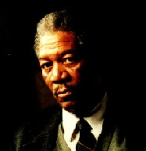

Contents | Features | Reviews | News | Archives | Store |
 |
|
| Movie Credits | Buy It! |
Seven
Review by Carrie Gorringe
|  | Directed by David Fincher. Starring Morgan Freeman, |
For those of you who thought that Silence of the Lambs was the last cinematic word on serial killing, I recommend that you run out and see Seven -- and not just because of Brad Pitt (who is, looks aside, the weakest element of this film, but more on this later). First-time director David Fincher has constructed a nearly-immaculate portrait of what happens when the human mind, warped by years of frustration and failure, goes wrong, and the often unorthodox methods of ratiocination which have to be employed in order to understand the inclinations of such a mind. In Seven, a detective on the verge of retirement, William Somerset (Freeman) meets newly-minted detective David Mills (Pitt). The task facing them is twofold: first, to identify and apprehend a serial killer of some intellectual pretension (he quotes from Milton and Shakespeare) who is murdering in ever more horrifying fashions. Each of his victims is, in the killer's opinion, guilty of embodying one of the seven deadly sins (gluttony, greed, sloth, lust, pride, wrath, and envy), and the cause of death is a directly symbolic exaggeration (literally "ad nauseam") of their putative sin. The second task is for Somerset to temper the impatient arrogance of Mills, who wants every case solved by yesterday, and believes that the best way of solving them is simply to beat his head against the nearest brick wall until the truth comes out.
The film has been constructed on a series of binary oppositions, primarily embodied in their main characters. Age and experience are only two of the differences between Somerset and Mills. Somerset is a bachelor, an erudite loner who spends his time with books (it is he who understands the significance of the quotation from Milton left by the killer at the first crime scene). Mills is married and not one for intellectual responses to murder scenes (his response to Somerset's suggestions to read Dante comes in the form of Cliff's Notes); he seems to epitomize what might be generally described as the American love of the practical over the theoretical. These binary oppositions elevate the level of suspense considerably. As would be expected in a detective film, as the audience waits with baited breath to see which set of oppositions will prevail.
However, in the case of Seven, the stakes are much higher. As the effects of Somerset's analysis become obvious, it is evident that an excessive reliance upon practical (read: traditional) police practices could have serious consequences in the realm of solving serial murder cases. If, as the FBI and other criminologists maintain, the tools for detecting clues at serial murder crime sites have much in common with the analysis of literature -- namely the need to discern, categorize and collate motifs and symbols into a coherent whole -- then such skills are more important to police officers than ever before. Thus, if Somerset and his real-life counterparts are anachronisms, serial killers will gain the advantage over intellectually-under-equipped detectives like Mills. A situation which, as the film's blackly-humorous ending suggests, would leave no one immune from their reach.
Indeed, the film's reliance on audience familiarity with sources of so-called high culture has been dismissed in some quarters as a pretentious gimmick, as if it were somehow an eighth deadly sin to expect intelligence either in police detectives or attendees of lowly genre films. Paradoxically, however, it is this reliance which gives the film its authenticity. After at least a decade of formal study of serial killing as a cultural phenomenon, certain characteristics exclusive to this type of homicide have become apparent. It appears as if serial killers in general are individuals who have above-average levels of intelligence (Ted Bundy's IQ was rated at 136), but are unable to succeed according to the rules of their society. Often the products of abusive households, they feel alienated from society, and, after years of psychological preparation, begin their careers of serial killing. Their killing is ritualized, sometimes involving torture that might last for days (an aspect which is portrayed most unsparingly in this film). In practicing this type of murder, the serial killer works out his (or, less often, her) own tensions and rage, and, in the process, leaves behind a symbolic manifestation of those tensions and rage in order to insult and horrify a world for which they feel little more than contempt. Serial killers have often left taunting clues behind them, as Jack the Ripper, the prototype of the modern serial killer, was said to have done when letters bearing his evil moniker were mailed to the police. Therefore, it is entirely logical to assume, given the disposition to higher intelligence and love of ritual common among serial killers, that allusions to literary works would not be an impossibility for a serial killer.
With this information in mind, Spacey's performance as a serial killer who is outwardly bland and viciously sardonic, yet so obsessed with fulfilling his "vision" that he is willing to risk everything to bring it to fruition, is hardly out of step with the reality of serial killers. The performance is, in actual fact, startlingly chilling, since it bears an unsettling resemblance to the behavior displayed by serial killers like Henry Lee Lucas and Ted Bundy, both as documentary footage portrays them, and as they portrayed themselves. After all, without a deceptively bland demeanor, serial killers would have difficulty attracting their victims, let alone having the skill to place those victims in a position of vulnerability. Nor are serial killers insane in the legal sense. Although there often is no relationship between the serial killer and his victims to seemingly "justify" his/her actions, the killer acts with malice aforethought; he/she is determined to pursue ritualistic murder and secures a victim with that end result in mind from the beginning. Serial killers do not live up to the stereotype of insane monsters, though their crimes are certainly monstrous. Their mindset can best be described as sociopathic; that is to say, they are individuals who know right from wrong, but are indifferent to moral strictures. To quote from American sociologists Levin and Fox, serial killers are "bad, not mad," and Seven conveys this distinction with distinction.
This, of course, begs the question as to whether or not Seven contains excessive violence, or if it glamorizes serial killing as the camera dwells upon the hideous consequences of serial murder. No doubt the realistic depiction of murder in Seven are unsettling, to say the least -- only a viewing of Ken Russell's The Devils (1971) with its portrayal of Inquistional torture and immolation in excruciating detail affected my gastrointestinal system as adversely. Nevertheless, it bears repeating that there is a difference between the depiction of violence in other films concerned with serial murder (such as Natural Born Killers) and a film like Seven. In the former, violence becomes the raison d'etre for the killers to enter into celebrity status; the killers' "skill"( i.e,, how much blood they can splatter and the extent of the mutilations they can commit upon their victims) is privileged over the suffering of the victims. Further to this point, these films often tend, in the process of demonstrating how this homicidal "skill" is perceived by the public with a combination of outrage and titillation, to become caught up in that same set of contradictions. In Seven, the process of ritualized killing is central to the narrative. The audience sees the ghastly result, while the homicidal process is verbally recounted by the detectives in graphic detail. Through this blend of present visual horror and verbal depiction of the past, cause and effect stand out in horrifying relief. Fincher reinstalls the concept of the personal (not to mention the visceral) to the often-depersonalized prose that accompanies media descriptions of serial murder; It is not enough to read or hear that a victim was tortured; Seven grabs the audience by the scruff of the neck, turns its collective face to the murder scene, and unrepentantly compels its members to contemplate what the concept of torture really means. The violence in Seven is not titillating at all; if it were, it would be much easier to tolerate.
Seven is not without its flaws. The opening credits, with their amateurish, pseudo-experimental film style, are at times illegible and annoying. Brad Pitt's portrayal of a bitter individual often lacks the necessary edge, especially in the first half of the film; eventually, after some floundering around, he finds a performance, but it doesn't really come together until just before the very end of the film. This is not the case with Morgan Freeman. Freeman invests the role of Somerset with a gentle yet firm dignity and strength that radiate from the screen from the beginning of the film, and Freeman never falters. Somerset is a man who, the audience has little doubt, has suffered much in his lifetime. Yet, Somerset is a man who has turned adversity into opportunity. He also acts as proof that one doesn't need to be a Ph.D. in order to appreciate fine literature, or that said appreciation is passe (the scene in which Freeman employs the resources of the library to determine the significance of the killer's messages has as much tension as any finely-calibrated chase scene; searching through library stacks has never seemed so exciting). Paltrow does what she can in the role of Mills' wife, but she has too little screen time to make any sort of impact; by the end of the film, she is quite literally reduced to the role of a prop. Indeed, her fate brings to mind yet another literary allusion, this one from Sartre's No Exit: at times, "hell is other people."
Contents | Features | Reviews | Books | Archives | Store
Copyright © 1999 by Nitrate Productions, Inc. All Rights Reserved.